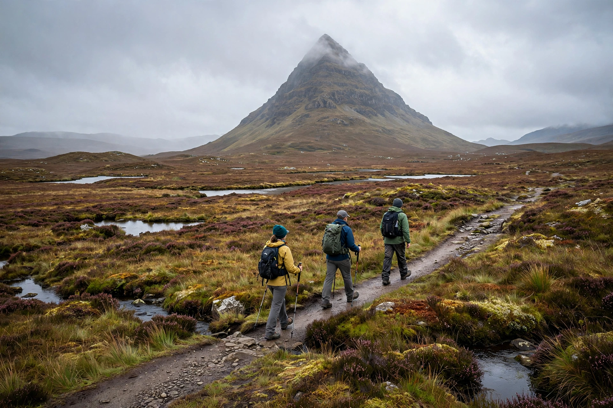

West Highland Way
| West Highland Way | |
|---|---|
| Length | 154 km (96 mi) |
| Trailheads | Milngavie — Fort William |
| Established | 1980 |
| Use | Long-distance walking |
The West Highland Way is a long-distance footpath in Scotland, running 154 km (96 miles) from Milngavie north of Glasgow to Fort William in the Scottish Highlands. Officially opened in 1980, it was Scotland's first officially designated long-distance route.

Route
The trail follows old military roads and drove roads, passing along the eastern shore of Loch Lomond, across Rannoch Moor, through Glen Coe, and beneath Ben Nevis, Britain's highest mountain, before finishing in Fort William. Walkers usually complete the route in six to eight days, often using baggage-transfer services between overnight stops.
Popularity
Tens of thousands of walkers complete the route each year, drawn by some of Scotland's most dramatic scenery. The Devil's Staircase, a zig-zag ascent of the Aonach Eagach ridge area approaching Glen Coe, is a noted highlight.